From download to your first repository
Cairn runs locally and has no account to create. It uses the git already on your machine, so your SSH keys, credential helpers and ~/.ssh/config work as they do in your terminal.
- Download Cairn for macOS (signed and notarized DMG) or Windows from Releases. On Windows, if SmartScreen warns you, click More info → Run anyway.
- On first launch, the Welcome tab offers Open, Clone and Init, plus a list of recent repositories.
- Run Setup Wizard… from Welcome or the command palette (⌘⇧P). It checks Git, the agent CLIs (Claude Code, Codex, Gemini, opencode, aider),
gh/glaband your editor, and tells you how to install anything missing. - Open an existing repository with ⌘O, or run Clone Repository…. Clone names the subfolder from the URL, and you can edit it. For a private HTTPS repository with no cached credentials, Cairn asks for a username and token.
One window for the whole repository
The repository navigator is on the left, history and preview are in the centre, and working changes are on the right. The toolbar holds Fetch, Pull, Push, Branch and Stash.
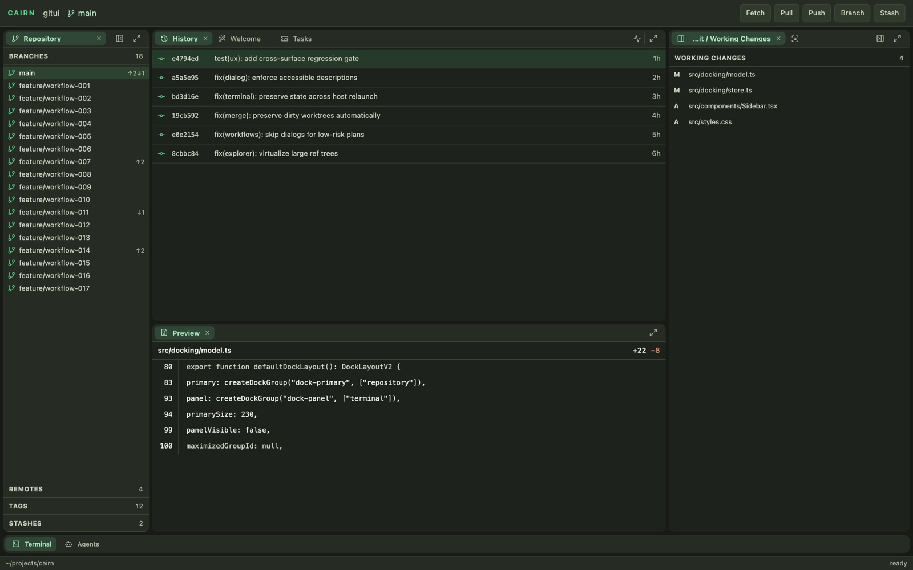
- Rearrange panes by dragging a tab into another group or to an edge. Drag a divider to resize a pane; sizes are saved.
- Switch workspaces with ⌘⇧1 (Standard), ⌘⇧2 (Log) and ⌘⇧3 (Working Tree).
- Save a layout with Layout: Save Current Layout…. Saved layouts can be restored or removed later. Layout: Reset Workbench returns to the default.
- Reopen a closed pane with the Layout: Show … commands for Repository Navigator, History, Preview, Commit / Working Changes, Code Review, CI and Tasks.
- Work on several repositories from the title-bar tabs. Each repository keeps its own panes and terminals.
Read the whole repository at a glance
The graph colours each lane and marks HEAD, branches, remotes, tags and stashes on their commits. Uncommitted work appears as a Working Directory row at the top. Large repositories load in pages.
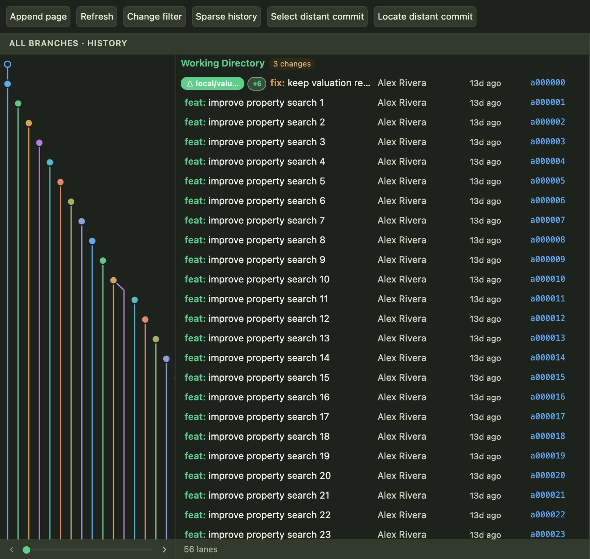
feat: and fix: are coloured by type.- Click a commit to see its details and changed files. Move through the history with ↑ and ↓.
- Press ⌘F to filter by author, message or path, or limit the graph to one branch.
- Right-click a commit to check it out, cherry-pick it, revert it, split it, move it to another branch, create a tag or copy its SHA.
- Each commit shows whether it is pushed or still only local. Filter to pending commits to see exactly what a push will send.
Find lost work
Reflog… lists every position HEAD has been at, so you can recover a commit after a reset or a deleted branch. Bisect… walks you through marking commits good or bad until Git finds the one that introduced a bug.
Diffs that stay fast on large files
Choose unified, side-by-side or whole-file view from the diff header. Syntax highlighting, change markers on the scrollbar and next/previous navigation work in all three.
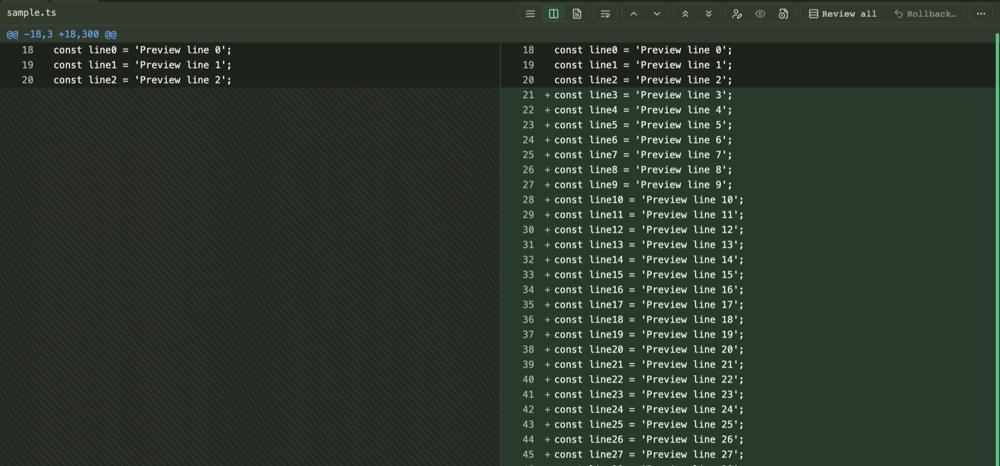
- Wrap long lines with the wrap button. The setting is remembered.
- Inline blame (Diff: Toggle Inline Blame) shows the author, age and commit message of the line under your cursor.
- Review all shows every changed file in one scroll, like a pull request.
- Images open in an image diff with 2-up, Swipe and Onion skin modes, plus zoom and pan.
Commit exactly what you mean
The Working Changes pane lists staged and unstaged files as a tree. Stage a file, a folder, a hunk or several selected files at once.
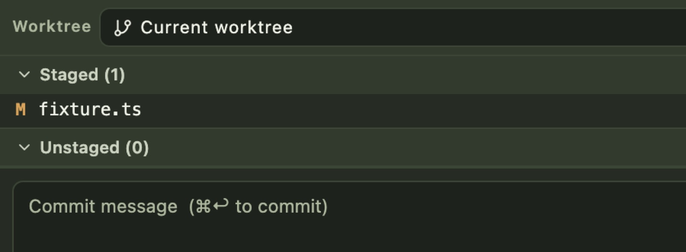
- Click a changed file to open its diff, then stage the hunks you want. Use ⌘-click or ⇧-click to select several files and stage, unstage or discard them together.
- Type a message and press ⌘↩. You can also reuse a recent message, or click Generate to have your agent draft one.
- Use Options or the dropdown next to Commit to amend the last commit. Undo Last Commit puts the changes back in your working tree.
- To throw away a change, use the discard button on the row or the context menu. Right-click a file or folder to add it to
.gitignore.
Branch without leaving your flow
- Press ⌘B or click Branch to create a branch. Rename, delete, merge or set an upstream from the branch's right-click menu.
- Double-click a branch to check it out. Cairn shows a plan first. If your local changes conflict, it stashes them and offers Resolve conflicts or Keep stashed, so no work is lost.
- Drag a branch or tag onto a commit to move it there. Cairn asks you to confirm, and the context menu offers the same action.
- Create annotated or lightweight tags with Create Tag…, and push them from the remote's menu.
- For a repository on GitHub or GitLab, the branch's right-click menu can open a pull or merge request form on the provider's site with the branch already filled in.
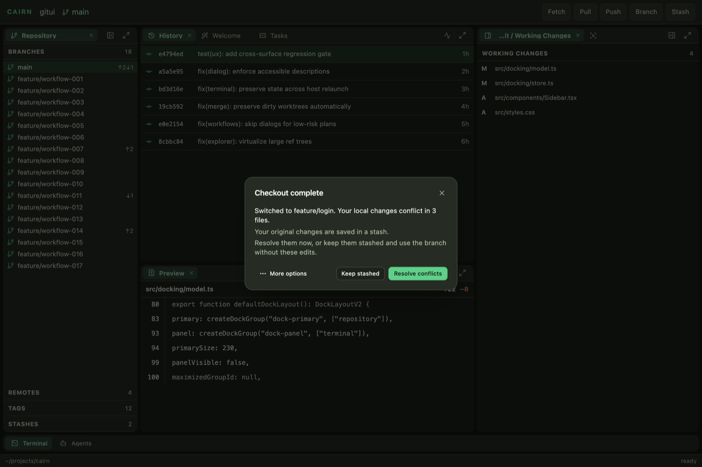
Sync in one click, with recovery built in
Simple operations, such as a fast-forward pull on a clean tree, run inline with a progress bar. Riskier ones show a plan you confirm, and Cairn offers a recovery path if anything fails.
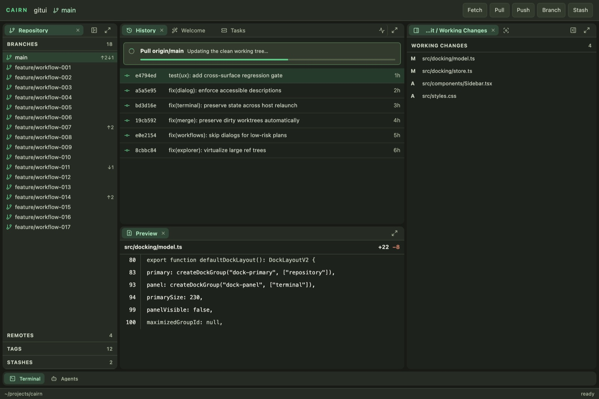
- Fetch one remote or all of them, with prune and tags. Defaults are saved per repository.
- Pull by merge, rebase or fast-forward only. Smart Pull… stashes local changes, pulls and then restores them.
- Sync Current Branch… pulls and then pushes in one step.
- Push normally, with force-with-lease, or with force. You can also push tags or delete a remote branch.
- Remotes can be added, renamed, edited (including a separate push URL) and pruned from the navigator.
Clean up commits before anyone sees them
Open History Rewrite Studio… from the palette or the navigator's Tools section. You can pick, reword, squash, fixup, drop and reorder commits in one place.
- Choose the commit range to edit.
- Set an action for each commit, and move commits up or down to reorder them.
- Review the plan and apply it. If any step conflicts, Cairn cancels the whole rewrite and leaves your branch where it was.
Some edits are quicker from a commit's right-click menu: Split This Commit… (by files, including older commits), Move This Commit to Branch…, Cherry-pick Onto HEAD… and Revert This Commit…. For a soft, mixed or hard reset, right-click the target commit.
A three-way solver that does the easy part for you
When a merge, rebase, cherry-pick or pull hits a conflict, the Conflict Solver opens with ours, the result and theirs side by side. Changes that don't conflict are applied for you.
- Jump between conflicts with [ and ], or by clicking the overview ruler.
- Take a side: ⌘← for left, ⌘→ for right, ⌘⌫ to ignore. Each choice moves to the next conflict. You can also take both sides, or double-click a block to edit it.
- Click Resolve simple conflicts to merge blocks where the two sides changed different lines.
- Save. Cairn stages the file and opens the next one. When every file is resolved, the footer offers the next step: commit the merge, or continue or abort the rebase.
Park work in seconds
- Click Stash in the toolbar, or run Stash Changes…. You can include untracked files.
- Stashes appear in the navigator and as badges in the graph on the commit they were based on.
- Right-click a stash to Show Stash Changes, Apply Stash, Pop Stash, Rename Stash or Drop Stash, or to compare it with the selected commit.
Several branches checked out at once
- Open Worktrees… to list, add or remove linked worktrees. You can select several to remove or clean up together.
- The Worktree picker at the top of Working Changes switches which checkout you're committing in.
- Submodules appear with their status. Init, update, sync or add one from the navigator. A new submodule is staged, not committed.
When an agent runs in a managed workspace, Cairn creates a separate worktree for it. Where the filesystem supports copy-on-write it seeds the worktree that way, so the agent's edits don't touch your checkout.
Get a review before you open the PR
Cairn reviews your working changes, staged changes, branch or a single commit with the agent CLI you already use. The review runs on your machine. The only network traffic is between that CLI and your AI provider.
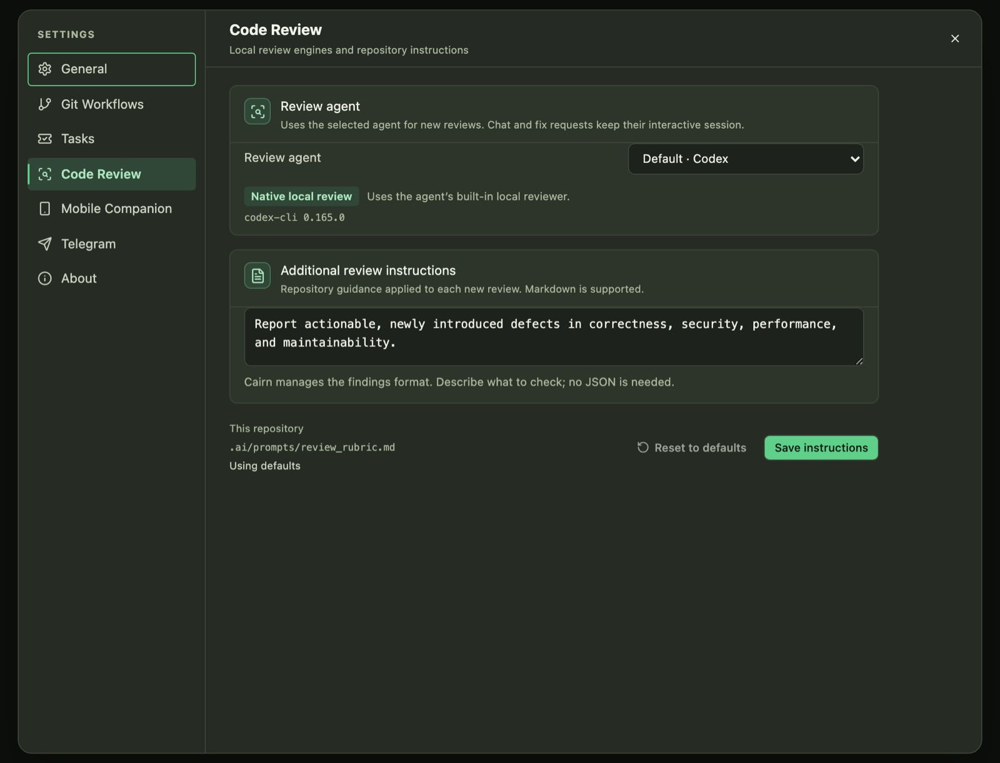
- Open Settings → Code Review and pick a Review agent. Codex and Claude run their built-in local reviewer where available; other agents use a review prompt.
- Optionally add Additional review instructions, for example "Focus on security and migrations." They are saved in the repository and apply to every review.
- Run AI Code Review… and choose what to review: working changes, staged changes, the branch, or one commit.
- Findings appear in the Code Review pane. Open one to jump to the line, or send it to the agent to fix.
Talk to your agent beside your code
Agent Chat connects to Claude Code, Codex and other agents over ACP. Each chat belongs to a repository and is kept between sessions.
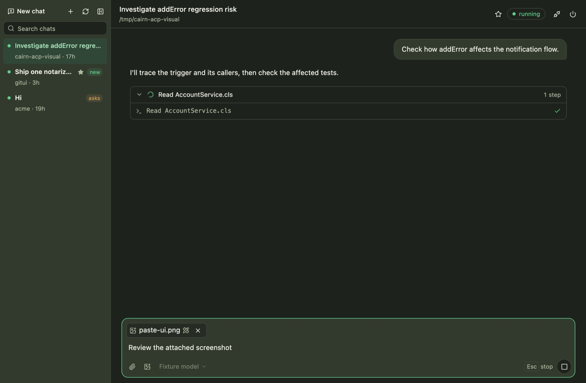
- Start a chat with New chat, then choose the agent and model before you send.
- Type
/to list the agent's commands, or$to insert a skill from your project's or home.agents,.codexor.claudefolder. - Attach files by pasting an image or dropping files on the composer. Click an attached image to mark it up before you send.
- Press Esc to stop a turn. Drafts are kept, and you can keep typing while the agent works.
- Retry or edit any of your messages from the transcript. Tool activity is grouped into collapsible steps.
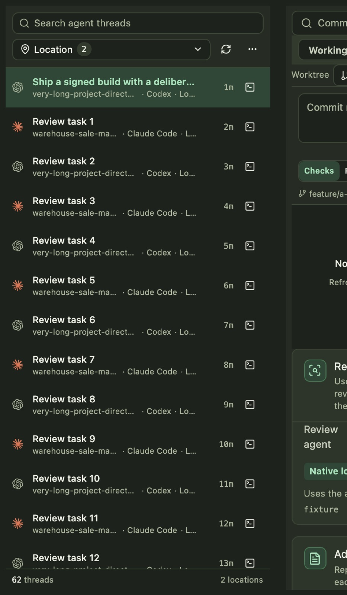
Agents run in tabs that tell you when they need you
Toggle the terminal panel with ⌃`. A background process keeps each session running, so terminals survive closing or reloading the window.
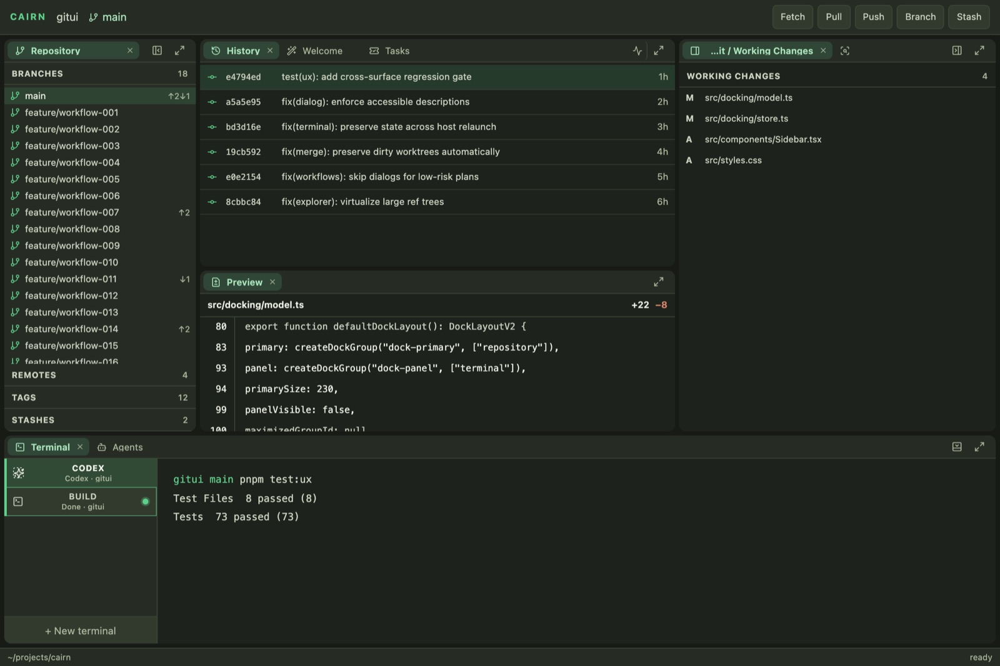
- Get notified. When an agent finishes a turn or rings the bell, its tab lights up and you get a desktop notification. ⌘⇧U jumps to the agent that needs you.
- Hand it context. Drag a file onto the terminal, or paste a screenshot, to give its path to Claude or another agent.
- Organize tabs. Drag to reorder. Drag a tab into the terminal body to split it beside another. Right-click to change a tab's colour. Switch between top tabs and a side rail with Terminal: Toggle Session Tabs Side/Top.
- Start anywhere. The + menu opens a shell in any recent project without switching repositories.
- Run configs. Run
launch.json,tasks.jsonandpackage.jsonscripts from the toolbar's run button.
Find anything, then hand it to an agent
- ⌘P searches file names, ⌘⇧F searches file contents (powered by ripgrep) and ⌘T searches symbols. Press Tab to switch between them. Search covers the current repository by default; select other open repositories to include them.
- Toggle case (⌥C), whole word (⌥W) and regex (⌥R). A highlighted preview opens at the matching line.
- ⌘⇧P opens the command palette, which lists every action in Cairn.
- ⌘⇧L opens Prompt Snippets, a library of reusable agent prompts. Fuzzy search tolerates typos, and ↩ inserts the snippet into the active agent.
- Snippets can include fields such as
{{name:Label|default}}, which you fill in before inserting, and built-in values such as{{branch}},{{repo}}and{{clipboard}}. - Select text in a terminal and press ⌘⇧S to save it as a snippet. Move your library between machines with the CSV export and import.
Your issues and checks, next to the code
The Tasks pane brings GitHub issues and Jira tickets into one sortable list. The CI pane shows GitHub Actions checks for the current branch.
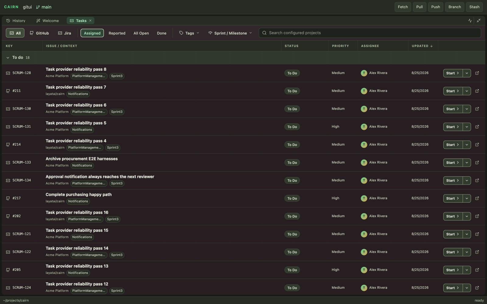
- Connect sources in Settings → Tasks. You can add several Jira sites; tokens are stored in your OS keychain.
- Open the pane with Layout: Show Tasks. Filter by provider, status, tags and sprint or milestone.
- For CI, sign in to the
ghCLI. Layout: Show CI shows checks and runs, and commits in the history show their CI status. Cairn stores no GitHub token of its own.
Keep an eye on agents when you're away
- Mobile Companion. Pair your phone in Settings → Mobile Companion. You get agent notifications, approvals and diffs on your phone.
- Telegram. In Settings → Telegram, pair a bot to receive agent updates, answer an agent's questions and continue a chat from Telegram.
- Cairn in a browser. Deploy Cairn Server (SSH)… installs the web version on any Docker host you can reach over SSH. The web version has the same Git tools and terminals.
Cairn without leaving the terminal
The standalone terminal UI runs on macOS, Linux and Windows. You can detach from a session and reattach later; the session keeps running in between.
- Install with the one-line installer on the home page. Run the same command again to update.
- Run
cairnin any Git repository. Five numbered panes show the workspace, work surface, commit composer, history and commit detail. - Move between panes with ctrl+w then 1–5, and within a pane with j/k. Press ? to see every key. : opens the command palette.
- Press Ctrl+] to detach. Run
cairnagain to reconnect.
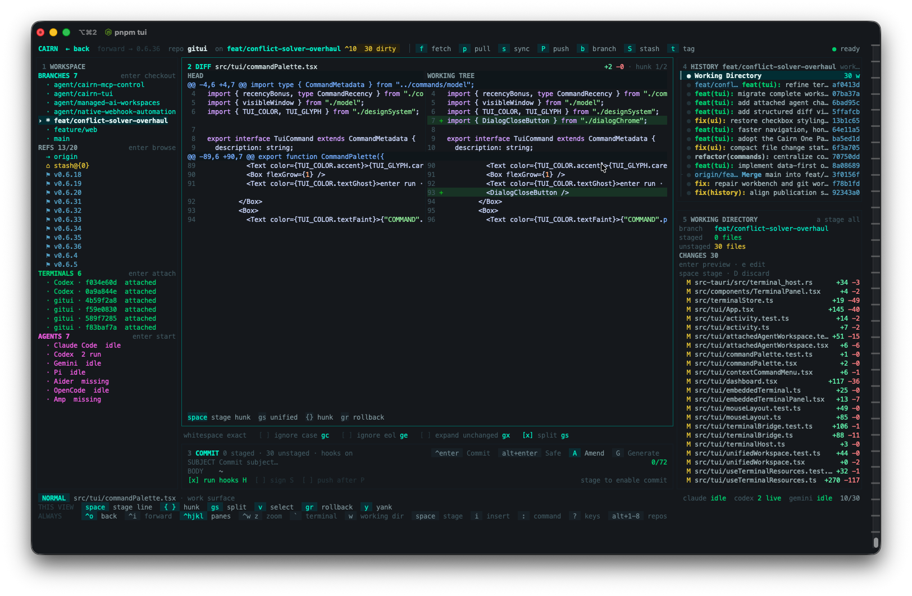
Make it yours
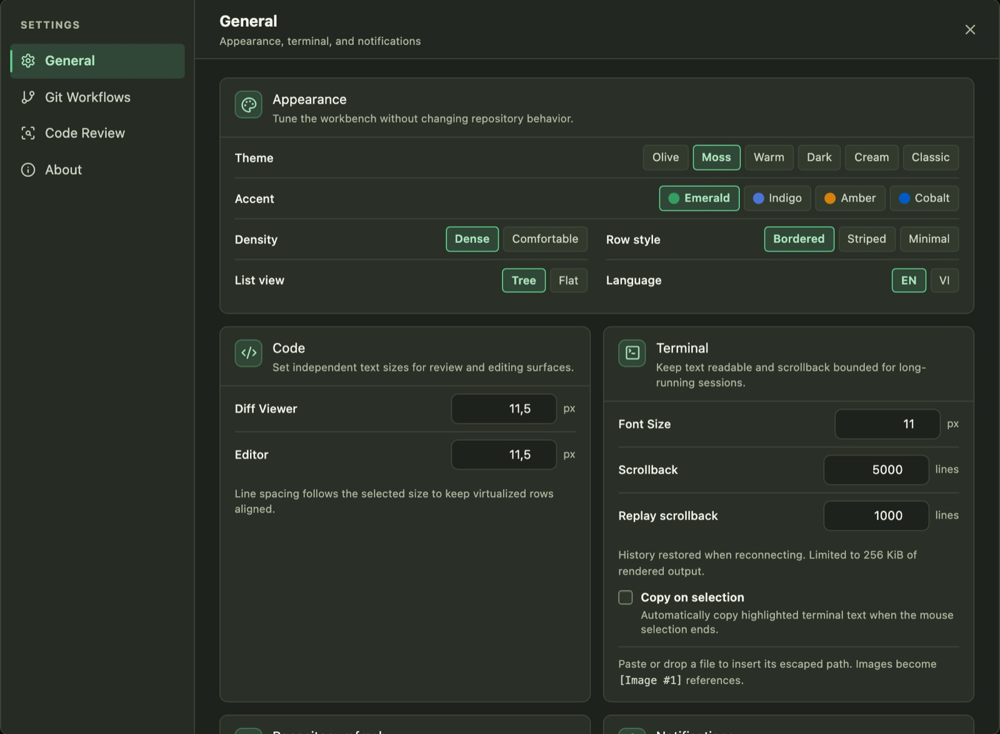
- Theme: Olive, Moss, Warm, Dark, Cream or Classic. Accent: Emerald, Indigo, Amber or Cobalt.
- Density and row style control how compact the lists are. List view shows files as a tree or a flat list.
- Language: English or Vietnamese.
- Code and Terminal set font sizes, scrollback, and how much scrollback is restored when you reconnect.
- Git Workflows sets defaults for pull, fetch and sync.
- On macOS, an opt-in setting copies each new screenshot to the clipboard, ready to paste into an agent.
The keys worth learning first
Press ? in the app for the full list. On Windows, use Ctrl instead of ⌘.
| ⌘⇧P | Command palette |
| ⌘P · ⌘⇧F · ⌘T | Search files · text · symbols |
| ⌘⇧L | Prompt snippets |
| ⌘⇧1 · ⌘⇧2 · ⌘⇧3 | Standard · Log · Working Tree workspace |
| ⌘O · ⌘R · ⌘B | Open repository · Refresh · New branch |
| ⌘↩ | Commit (in the message box) |
| ⌘F | Filter history |
| ↑ / ↓ | Move through the graph |
| ⌃` | Toggle terminal |
| ⌘⇧U | Jump to the agent that needs attention |
| ⌘K (in terminal) | Clear the terminal |
| ⌘⇧S (in terminal) | Save selection as a snippet |
| Esc | Close palette, dialog or menu |
Ready to try it?
Free, with no account. Uses your own agents. Notarized on macOS.
⤓ Download Cairn — free Back to the overview